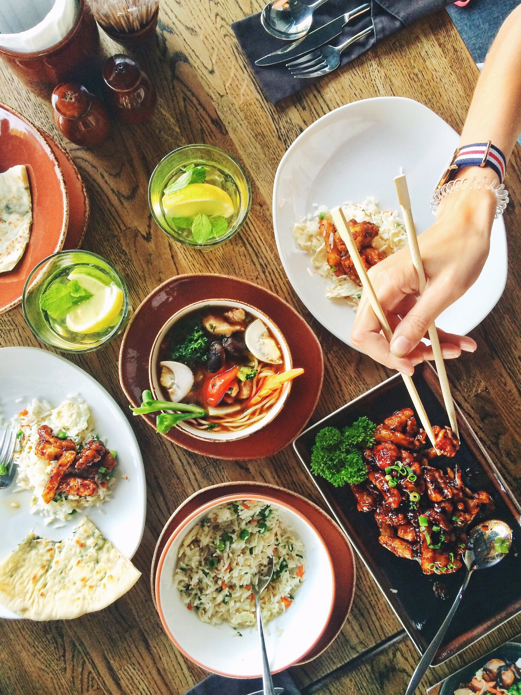

Find your next table
Discover great restaurants in Kota Kemuning, get a recommendation that suits you and reserve your table in a few clicks.
Browse restaurantsAbout MyRestaurant
MyRestaurant is a website where you can reserve a table . It helps diners explore restaurants, choose one that fits their taste and budget, and book a table without any problem.
- Convenience: browse, choose and reserve in one place.
- Variety: six restaurants serving mamak, western, Arab, Chinese, Indian and Korean food.
- Accessibility: clear prices, halal and vegetarian information, and pages that work on phones, tablets and computers.
- Dining experience: every restaurant has a short description and signature dishes, so you know what to expect.
Who is it for?
MyRestaurant is made for families who wants to spend their weekend with a meal together, couples looking for a date night, professionals arranging a business lunch, and tourists who want to try local food with confidence.
What we offer

- Restaurant discovery: see each restaurant's cuisine, dishes, prices and address.
- Personalised recommendations: tell us your diet, budget and the occasion, and we suggest suitable restaurants.
- Easy reservations: book a table and pay a small deposit by voucher or online payment.